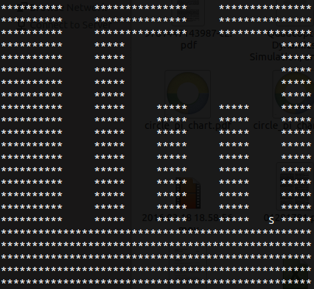

Lost and Sound
A collaboration with Nathan Mull and Brian Graham.

We designed and developed this game for the Big Hack in 2013. Our overarching goal
was to create a game that audio based as opposed to video based. The audio game
we ended up creating was a maze game where you have to traverse through a maze by
listening to a set of tones that represented the distances of walls directly
north, south, east and west of your position. To our knowledge, this was the first
game that is played completely through sound instead of visuals. Our project ended
up winning 2nd Place, contributing to Berkeley shutting Stanford out of winning
any awards that year.